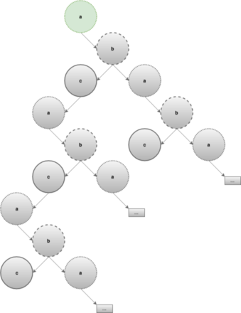
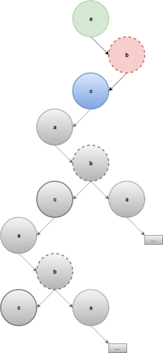
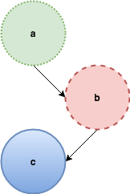
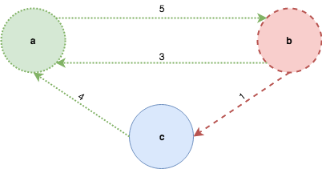
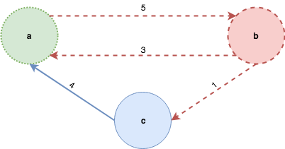
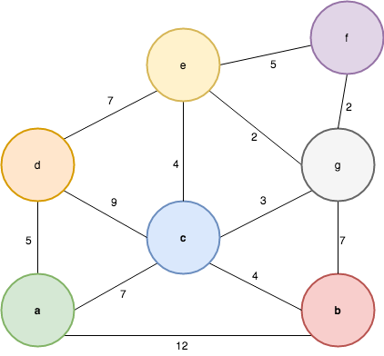
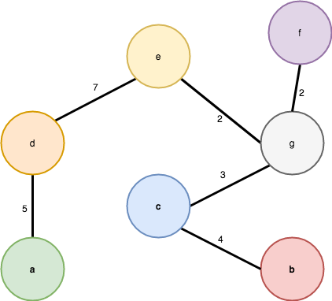

Graphs are a fundamental data structure in computer science because a lot of problems can be modelled with them. Graph traversal, shortest path between two vertices, minimum spanning trees are all well-known algorithms and there is plenty of literature available. This applies to imperative languages but is it the same for functional languages? My first-hand experience is that this is not quite the case and answering a seemingly simple question like “how should I implement a graph algorithm in a functional programming language?” ends up being unexpectedly challenging.
The following table gives a pretty good idea of how pervasive graphs are and why anyone should care to answer the question in the first place.

Graph applications (image taken from a slide of the Algorithms part 2 MOOC on Coursera by Bob Sedgwick and Kevin Wayne)
Problems involving graphs are also not unusual during job interviews and this is actually where my curiosity about functional graph algorithms really took off: I was eager to learn how to approach those kind of problems functionally. When I started searching I honestly didn’t expect to have such a hard time finding material, and I do not even mean good material but any material at all! Maybe I didn’t look for it hard enough - if that’s the case please let me know! - but basically the only book on the subject of functional data structures out there is Purely Functional Data Structures by Chris Okasaki, released in 2008 (and it’s pretty advanced material) and the only book I am aware of that focused on functional algorithms is Pearls of Functional Algorithm Design by Richard Bird. Graphs and graph algorithms are no exception: there is a massive amount of literature available for imperative languages but it takes some DuckDuckGo-fu to find literature on the topic for purely functional languages, and more often than not that literature comes in the form of academic papers. After a decent amount of digging my understanding is that lots of purely functional algorithms do exist but they are not as efficient as the imperative counterparts; this might be one of the reasons why they are basically shovelled under the carpet and not used in practice. So let’s try to answer a slightly different question first: How can I implement a graph algorithm in a functional programming language?
Imperative-style algorithms with monads
One option could be “translating” graph algorithms from the imperative world to the functional world but that turns out to be unsurprisingly unpleasant: one of the main reasons is that imperative graph algorithms rely heavily on state and side effects (sometimes for efficiency reasons). Let’s take Haskell as our functional programming language of choice, and try to translate the depth-first search (DFS) algorithm as in The Algorithm Design Manual by Steven S. Skiena:
{-# LANGUAGE KindSignatures #-}
{-# LANGUAGE BangPatterns #-}
{-# LANGUAGE RankNTypes #-}
{-# LANGUAGE ScopedTypeVariables #-}
import Data.Foldable (foldlM)
import qualified Data.Vector.Mutable as MV
import qualified Data.Sequence as Seq
import Control.Monad.State.Strict (StateT, evalStateT, gets, modify', get, lift)
import Control.Monad.ST (ST, runST)
import Control.Applicative (liftA2)
import Control.Monad.Primitive (PrimMonad)
data Graph weight label = Graph [(label, [EdgeNode weight label])] Directed Int deriving Eq
type EdgeNode weight label = (label, weight)
type VertexState s = MV.MVector s VState
data DFSState s label weight =
DFSState { dfsVertex :: label
, dfsConnectedComponent :: ConnectedComponent a weight
, dfsVertexState :: VertexState s
}
-- undiscovered, discovered or processed
data VState = U | D | P deriving (Show, Eq, Ord)
type ConnectedComponent weight label = Tree weight label
data Tree weight label = Nil | Node !label [(weight, Tree weight a)] deriving (Show, Eq)
-- Let's assume for simplicity that vertices and weights are integers
dfs :: Graph Int Int -> [ConnectedComponent Int Int]
dfs g =
runST $ do
vstates <- MV.replicate (verticesCount g) U
loop (vertices g) vstates
where
loop :: forall s. [Int]
-> MV.MVector s VState
-> ST s [ConnectedComponent Int Int]
loop vs vstates = do
mv <- findNextUndiscoveredVertex vstates
maybe (return []) processVertex mv
where
processVertex v =
liftA2 (:) (evalStateT dfs' (DFSState v (Node v []) vstates))
(loop vs vstates)
dfs' :: StateT (DFSState s Int Int) (ST s) (ConnectedComponent Int Int)
dfs' = do
DFSState v tree vstates' <- get
MV.write vstates' v D
tree' <- foldlM (\tree' edge@(v', _) -> do
vstate <- MV.read vstates' v'
lift $ processEdgeNode v tree' vstate edge)
tree
(adjacent v g)
MV.write vstates v P
modify' (\s -> s{ dfsConnectedComponent = tree' })
gets dfsConnectedComponent
processEdgeNode :: Int -> Tree Int Int -> VState -> EdgeNode Int Int -> ST s (Tree Int Int)
processEdgeNode v tree Undiscovered edgeNode@(v', _) =
evalStateT dfs' (DFSState v' (buildTree v edgeNode tree) vstates)
processEdgeNode _ tree _ _ = return tree
findNextUndiscoveredVertex :: forall (m :: * -> *). PrimMonad m
=> MV.MVector (PrimState m) VState
-> m (Maybe Int)
findNextUndiscoveredVertex vstates =
go 0 (MV.length vstates)
where
go idx size
| idx == size = return Nothing
| otherwise = do
vstate <- MV.read vstates idx
case vstate of
U -> return (Just idx)
_ -> go (idx + 1) sizeThis code is possibly better than an imperative-style implementation in some aspects - for example state and side effects are now explicit and pattern matching makes the code a bit clearer in some places - but one might argue that monadic code makes the algorithm even harder to follow.
There must be a better way of doing this! Some online research on the subject led me to this page in the Haskell wiki that has a few links to research papers that tackle graphs and graph algorithms using a functional programming language. Two of them caught my attention and I’d like to illustrate the solutions proposed in those papers.
Functional depth-first search using adjacency lists
The first paper is titled “Structuring Depth First Search Algorithms in Haskell” , written by David King’s and John Launchbury’s in 1995. The main goals of the paper are:
- implementing depth-first search and related algorithms using a functional style without any performance penalty - this means traversing the graph in linear time
- achieving greater code modularity
- being able to formally prove the critical properties of the considered algorithms
I would like to highlight this last aspect: it’s probably the first time I read material on graph algorithms that takes it into consideration and it can be really useful, for example in property testing. The paper approaches graph traversal as a combinatorial problem and employs a common technique in that kind of problems: generate and prune. Before illustrating the gist of that technique, let’s define some types and auxiliary functions:
{-# LANGUAGE RankNTypes #-}
{-# LANGUAGE FlexibleContexts #-}
{-# LANGUAGE BangPatterns #-}
import Data.Array (accumArray, bounds, indices)
import qualified Data.Array.ST as MA
import Control.Monad.ST
type Table = Array Vertex
type Graph = Table [EdgeNode]
-- Let's assume for simplicity that vertices and weights are integers
type Vertex = Int
type Weight = Int
type Bounds = (Vertex, Vertex)
buildG :: Bounds -> [(Vertex, EdgeNode)] -> Graph
buildG bounds = accumArray (flip (:)) [] bounds
mkEmpty :: (Ix i, MA.MArray (MA.STUArray s) Bool m)
=> (i, i) -- min & max bound
-> m (MA.STUArray s i Bool)
mkEmpty bnds = MA.newArray bnds False
contains :: (Ix i, MA.MArray (MA.STUArray s) Bool m)
=> MA.STUArray s i Bool -> i -> m Bool
contains = MA.readArray
include :: (Ix i, MA.MArray a Bool m) => a i Bool -> i -> m ()
include arr v = MA.writeArray arr v TrueNow let’s consider this very simple graph:

and let’s look at the generate and prune technique at a high level: the “generate” step describes how to create all possible trees from a given vertex. The following picture illustrates it for the sample graph above, notice that the generated tree is infinite. The nodes that are greyed-out are not yet generated and will be only if it’s necessary:

The “prune” step discards the sub-trees that violate to the invariants of DFS, namely those that have already been discovered. Back to our example, when the algorithm reaches b, it will discard the tree with root a because it has been already been discovered and traverses the tree whose root is labelled c instead:

The same thing happens after c is traversed leaving the final DFS spanning tree:

The approach guarantees the efficiency of the algorithm because the evaluation strategy of languages with non-strict semantics (call-by-need or lazy evaluation) assures that an expression is evaluated only once and on-demand; also, the discarded trees will never be used - that is traversed - so they will never be created in the first place. Let’s have a look now at the implementation:
dfs :: Graph -> [Vertex] -> Forest Vertex
dfs g = prune (bounds g) . map (generate g)
where
-- create all possible trees for each vertex...
generate :: Graph -> Vertex -> Tree Vertex
generate g v = Node v (map (generate g . fst) (g ! v))
-- ...and discard the ones that are unused
prune :: Bounds -> Forest Vertex -> Forest Vertex
prune bnds ts = runST $ do
s <- mkEmpty bnds :: forall s. ST s (MA.STUArray s Vertex Bool)
chop ts sNotice that the type signature for the mkEmpty bnds is mandatory, more info can be found here. The chop function discards the trees that have already been discovered:
chop :: (MA.MArray (MA.STUArray s) Bool m)
=> Forest Vertex -> MA.STUArray s Vertex Bool -> m (Forest Vertex)
chop [] _arr = return []
chop (Node v ts:ns) arr = do
visited <- contains arr v
if visited
-- prune ts
then chop ns arr
else do
-- label vertex
include arr v
-- traverse left-to-right
ts' <- chop ts arr
-- traverse top-to-bottom
ns' <- chop ns arr
return $ Node v ts' : ns'Two qualities of this solution that can be highlighted are:
- for performance reasons it uses a mutable array to keep track of the state of each vertex. The paper points out that this is not strictly necessary and if a logarithmic increase in the time complexity of the algorithm is acceptable, a
Setdata structure can be used to avoid the need for monadic code. - the algorithm does use a functional style but the data structure chosen to represent a graph is an adjacency list, which is usually the preferred way of representing graphs in the imperative programming languages. Why this is important will become apparent in the next paragraph.
A little remark
Section “5. Implementing depth-first search” states that
The choice of pruning patterns determines whether the forest ends up being depth-first (traverse in a left-most, top-most fashion) or breadth-first ( top-most, left-most)
but without providing any code for it and I honestly could not wrap my head around on how to write a breadth-first traversal with the algorithm proposed in the paper. If anybody has some pointers again please let me know!
Functional graph algorithms using inductive graphs
The second paper is Martin Erwig’s “Inductive Graphs and Functional Graph Algorithms” and it was published in 2001. The main goals of the paper are:
- describing an inductive definition of graphs and graph algorithms as recursive functions
- providing efficient implementations of graph algorithms that can be used in real-world scenarios
- providing clear algorithms that can be used to teach graph algorithms
At the very beginning of the paper Martin Erwig asks the following question:
How should I implement a graph algorithm in a functional programming language?
which was exactly the one that started my exploration of the topic. The paper acknowledges lots of the functional graph algorithms already developed but also considers them all not completely satisfactory either because they introduce constructs that are not currently available in today’s programming languages or because they entail some imperative-style strategy - i.e. keeping track of visited nodes by labelling them - that contaminates the clarity of the algorithm, makes it harder to reason about it and to prove its correctness. The solution the paper proposes is to think about graphs in a new way.
Enter inductive graphs
An observation in the paper particularly caught my attention: lists and trees algorithms are much simpler and more modular than graph algorithms and do not require additional bookkeeping: why is that? The answer is two-fold: their definition and the definitions of functions on them are inductive and besides that pattern matching helps a great deal when it comes to clarity and succinctness. Now let’s have a look at the definition of graphs: they are usually defined as a pair G = (V, E) where V is the set of vertices and E the set of edges, where edge is defined as a pair of vertices in V. Imperative algorithms on graphs discover edges and vertices incrementally and usually need to keep track of the visited vertices either using a separate data structure or by storing more data in the graph itself. In this sense the usual definition of graphs is monolithic and this is the reasons why algorithms that use this API are doomed if what they strive for is clarity and modularity. Would it be possible to define graphs inductively? If so how? A valid definition for a graph data structure defined inductively might look like the following:
infixr 5 :&:
data Graph weight label
= Empty
| (Context weight label) :&: (Graph weight label)
deriving Show
type Context weight label =
( Adj weight -- inbound edges
, Vertex
, label
, Adj weight -- outbound edges
)
-- adjacent weighted edges
type Adj weight = [(weight, Vertex)]
type Vertex = IntThe definition should look familiar if you’ve already seen one for trees or lists: a graph is either empty or it has a context and another graph. A Context contains information about a given vertex, namely its value, label (if any) and its adjacent edges classified as inbound or outbound. So far so good: now taking the following graph as an example:
how can we build an inductive graph from a list of vertices and edges? One possible way of building the inductive graph would be the following:

ƛ: read "mkG [('a', 1), ('b', 2), ('c', 3)] [(1, 2, 5), (2, 1, 3), (2, 3, 1), (3, 1, 4)]"
([(4,3),(3,2)],1,'a',[(5,2)]) :&: (([],2,'b',[(1,3)]) :&: (([],3,'c',[]) :&: Empty))But that’s not the only valid representation of an inductive graph, another valid inductive graph is the following:

ƛ: read "mkG [('c', 3), ('b', 2), ('a', 1)] [(1, 2, 5), (2, 1, 3), (2, 3, 1), (3, 1, 4)]"
([(1,2)],3,'c',[(4,1)]) :&: (([(5,1)],2,'b',[(3,1)]) :&: (([],1,'a',[]) :&: Empty))At this point we can start defining some of the properties of inductive graphs:
- given a list of vertices and a list of edges, multiple inductive graphs can be built depending on the order of insertion of its vertices
- equality is not defined by their “shapes” but rather by the set of vertices and edges they represent
- the adjacent inbound and outbound edges in a
Contextare lists of vertices that have already been discovered - inductive graphs are fully persistent data structures
Active graph patterns
Pattern matching was identified as one of the ingredients that made lists and trees algorithms clean and succinct, the paper refers to an extension of pattern matching for graphs named “active graph pattern” whose main goal is as far as I understood to make the notation more compact, augmenting the classic pattern matching by allowing a function to be called before the matching is applied. It is very similar to view patterns but it is not currently available in Haskell as far as I know; the following code is made up and will not type-check but hopefully will provide a good intuition:
deg :: Vertex -> Graph weight label -> Int
deg v ((ins, _, _, outs) (:&: <!> v) g) = length ins + length outThe expression (:&: <!> v) can be interpreted as: “find the Context for the vertex v in the graph g if it exists and try to match the given pattern”. Active graph patterns are not essential when implementing inductive graphs and it is possible do pattern matching without them, all that is needed is a function match. An extremely naive implementation might look like:
match :: Vertex -> Graph weight label -> Maybe (Context weight label, Graph weight label)
match qv = matchHelp ([], [])
where
matchHelp _ Empty = Nothing
matchHelp (lvs, wes) ((ins, v, l, outs) :&: g)
| qv == v =
-- rebuild the graph inserting `v` last
let (:&:) !ctx !g' = mkG g ((l, v):lvs) es'
-- return `v`'s context and the new inductive graph
in Just (ctx, g')
| otherwise = matchHelp ((l, v):lvs, es') g
where
-- build a list of edges to rebuild the graph
es' =
map (\(w, fromv) -> (fromv, v, w)) ins
++ map (\(w, tov) -> (v, tov, w)) outs
++ wesFunctional graph algorithms
Now that we defined graphs inductively, it’s time to show how that can be leveraged to write clear, recursive graph algorithms. Let’s have a look at some fundamental graph algorithms: depth-first search (DFS), breadth-first search (BFS), Dijkstra’s shortest path and Prims’ algorithm to find the minimum spanning tree (MST).
Depth-first search
Using a depth-first search strategy to visit a graph essentially means: traverse each vertex once and visit successors before siblings. Here’s what the algorithm looks like:
dfs :: [Vertex] -> Graph weight label -> [Vertex]
dfs _ Empty = []
dfs [] _ = []
dfs (v:vs) g = case v `match` g of
Nothing -> dfs vs g
Just ((_,vtx,_,outs), g') -> vtx : dfs (destvs outs ++ vs) g'
-- extracts destination vertices from the outbound edges of a context
destvs :: Context label weight -> [Vertex]dfs is a recursive function that takes a list of input vertices and a graph and returns a list of vertices sorted by traversing the graph in DFS-style. If the graph or their input vertices are empty it returns the empty list, otherwise it matches the current vertex v against the graph. If v is a vertex in the graph, match will first return its context and a new graph without it, append v to the results list and finally the recursion will happen using as input the list of destination vertices for all outbound edges of v appended to the remaining source vertices and the new graph returned by the match function; if v is not a vertex in the graph then it is simply ignored. There key observations about the algorithm are:
- destination vertices are appended in front of the current vertex: this is what makes the algorithm traversing the input graph depth-first. This is exactly what the second invariant of DFS dictates: visit successors before siblings.
- the
matchfunction returns a new graph without the query vertex: this is what the first invariant of DFS dictates: visit each vertex exactly once. Since the new graph doesn’t contain the query vertex there is no need for keeping track of the visited vertices therefore no bookkeeping is necessary.
Let’s have a look at a very simple example using one of the sample graphs above:
ƛ: let g = read "mkG [('c', 3), ('b', 2), ('a', 1)] [(1, 2, 5), (2, 1, 3), (2, 3, 1), (3, 1, 4)]"
([(1,2)],3,'c',[(4,1)]) :&: (([(5,1)],2,'b',[(3,1)]) :&: (([],1,'a',[]) :&: Empty))
ƛ: dfs (vertices g) g
[1, 2, 3]One of the applications of DFS is finding the spanning forest (set of trees) of a graph. The algorithm needs to build the spanning forest by traversing the graph in such a way that only when DFS traversal is completed for a connected component it will proceed with the next one. Let’s define some types first:
data Tree a = Nil | Node !a (Forest a) deriving Show
type Forest a = [Tree a]
dff :: [Vertex] -> Graph weight label -> Forest Vertex
dff vs g = fst (dff' vs g)The dff function calls an auxiliary function dff' that does the heavy lifting, let’s have a look at it:
dff' :: [Vertex] -> Graph weight label -> (Forest Vertex, Graph weight label)
dff' [] g = ([], g)
dff' (v:vs) g = case v `match` g of
Nothing -> dff' vs g
Just (ctx, g') -> (Node v ts : forest, g'')
where
-- `second` applies the function `dff' vs` to the second element of
-- the pair returned by `dff' (destvs ctx) g'`
(ts, (forest, g'')) = let (_,g'') = dff' (destvs ctx) g' in (ts, dff' vs g'')
-- or more succinctly: (ts, (forest, g'')) = second (dff' vs) (dff' (destvs ctx) g')
-- extracts destination vertices from the outbound edges of a context
destvs :: Context label weight -> [Vertex]The dff' function is another recursive function: if matching the vertex v with the graph g succeeds, dff' calls itself passing its siblings and the new graph as arguments until the list of vertices is empty; when the list is empty the recursion continues for the remaining vertices vs and the most recent version of the graph. Again let’s have a look at a very simple example built on top of the previous one:
ƛ: let g = read "mkG [('a', 1), ('b', 2), ('c', 3), ('d', 4), ('e', 5)] [(1, 2, 5), (2, 1, 3), (2, 3, 1), (3, 1, 4), (4, 5, 7)]" :: Graph Int Char
([(4,3),(3,2)],1,'a',[(5,2)]) :&: (([],2,'b',[(1,3)]) :&: (([],3,'c',[]) :&: (([],4,'d',[(7,5)]) :&: (([],5,'e',[]) :&: Empty))))
ƛ: dff (vertices g) g
[Node 1 [Node 2 [Node 3 []]], Node 4 [Node 5 []]]Breadth-first search
Using a breadth-first search strategy to visit a graph essentially means: traverse each vertex once and visit siblings before successors. Here’s what the algorithm looks like:
bfs :: Graph weight label -> [Vertex] -> [Vertex]
bfs gr vs = bfs' gr vs
where
bfs' g svs
| isEmpty g || null svs = []
| otherwise = case v `match` g of
Nothing -> bfs' g vs
Just ((_,v,_,outs), g') -> v : dfs (vs ++ destvs outs) g'
-- extracts destination vertices from the outbound edges of a context
destvs :: Context label weight -> [Vertex]There key facts to notice about the algorithm are:
- siblings are appended at the end of the source vertices: this is what makes the algorithm traversing the input graph breadth-first. This is exactly what the second invariant of BFS dictates : visit siblings before the successor.
- the
matchfunction returns a new graph without the current vertex: this is what the first invariant of BFS dictates: traverse each vertex exactly once. Since the new graph doesn’t contain the current vertex there is no need for keeping track of the visited vertices. - the algorithm is mostly the same as
dfs, the only thing that changes is where siblings are appended: in case of BFS they’re appended at the end of the list, in case of DFS in front of it. To fully appreciate this it might be useful to think of these algorithms in terms of the data structures they use: LIFO in case of DFS and a FIFO in case of BFS.
One of the applications of BFS is finding the shortest path in a unweighted graph. For convenience the paper chooses a different representation for the spanning forest: a list of labelled paths. Let’s have a look at the implementation of the shortest path algorithm:
type Path = [Vertex]
-- Roots tree
type RTree = [Path]
shortestPath :: Vertex -> Vertex -> Graph weight label -> Path
shortestPath src dst = reverse . pathTo ((==dst) . head) . bft src
pathTo :: (a -> Bool) -> [a] -> a
pathTo p = head . filter pThe esp function requires a source vertex and a destination vertex, filters the path to the destination and reverses it (why this is necessary will become clear in a moment). Notice that since Haskell has non-strict semantics, esp stops as soon as the path to the target destination vertex is found. Now let’s have a look at the implementation of the bft function:
bft :: Vertex -> Graph weight label -> RTree
bft v = bf [[v]]
bf :: [Path] -> Graph weight label -> RTree
bf paths = bf' paths
where
bf' :: [Path] -> Graph weight label -> RTree
bf' paths g
| null paths || isEmpty g = []
| otherwise = case v `match` g of
Nothing -> bf' paths' g
Just ((_,_,_,outs), g') -> path : bf' (paths' ++ map (:path) (destvs outs)) g'
-- gets the current vertex from the first path in the list and the remaining paths
-- paths will never be empty because `bf` is called using a non-empty list
(path@(v:_), paths') = let (pss, pss') = splitAt 1 paths in (head pss, pss')
-- more succinctly: (path@(v:_), paths') = first head (splitAt 1 paths)
-- extracts destination vertices from the outbound edges of a context
destvs :: Context label weight -> [Vertex]Instead of explaining what the function does step-by-step, let’s have a look at an example on a simple graph as it might be easier to understand:
ƛ: let g = read "mkG [('a', 1), ('b', 2), ('c', 3)] [(1, 2, ()), (2, 1, ()), (2, 3, ()), (3, 1, ())]" :: Graph () Char
([(4,()),(3,())],1,'a',[(5,())]) :&: (([],2,'b',[(1,())]) :&: (([],3,'c',[]) :&: Empty))
ƛ: bf [[1]] g
[[1],[2,1],[3,2,1]]Notice that an unweighted graph is a graph whose weight is () and that the resulting spanning tree contains the shortest path from the source vertex to all other vertices in reverse order. The bf function builds complete paths from a source to a destination vertex but doesn’t waste any memory because list prefixes are shared.
Dijkstra’s shortest path
Finding the shortest path between two vertices means finding the cheapest path between them (where “cheap” is dependent upon the weight or cost of the edges). Dijkstra’s algorithm to find the shortest path in a weighted graph essentially chooses always the next cheapest edge taking into account the distance traversed so far. First let’s define two new auxiliary types:
-- Labelled vertex
type LVertex label = (label, Vertex)
-- Only needed to be able to define `Eq` and `Ord` instances
newtype LPath label = LPath { getLPath :: [LVertex label] }
-- Labelled R-Tree (or Root Tree)
type LRTree label = [LPath label]
instance Eq label => Eq (LPath label) where ...
instance Ord label => Ord (LPath label) where ...
type Weight = IntThe algorithm uses a min-heap and some auxiliary functions to keep track of the cheapest path:
import qualified Data.Heap as Heap
getPath :: Vertex -> LRTree label -> Path
getPath v = reverse . map snd . getLPath . pathTo ((==v) . lv2v)
where
lv2v = snd . head . getLPath
expand :: Int -> LPath Weight -> Context Weight label -> [LPath Weight]
expand d (LPath p) (_, _, _, outs) = map (\(w, v) -> LPath ((w + d, v):p)) outs
mergeAll :: [LVertex Weight] -> Heap.Heap (LPath Weight) -> Context Weight label -> Heap.Heap (LPath Weight)
mergeAll p@((dist, _):_) h ctx = foldr Heap.insert h (expand dist (LPath p) ctx)The expand function builds new LPaths whose label is the sum of the distance walked so far - let’s assume weights are positive integers for simplicity - and the weight of the outbound edge. The mergeAll function takes these paths and inserts them in the heap. The getPath function just extracts the path to the given destination vertex from the list of paths. Now let’s have a look at the core of the algorithm:
dijkstra :: Heap.Heap (LPath Weight) -> Graph Weight label -> LRTree Weight
dijkstra h g
| isEmpty g = []
| otherwise = case Heap.viewMin h of
Nothing -> []
Just (lpath, h') -> dijkstra' (lpath, h')
where
dijkstra' (LPath p@((_, v):_), h') =
case v `match` g of
Nothing -> dijkstra h' g
Just (ctx, g') -> LPath p : dijkstra (mergeAll p h' ctx) g'
shortestPathTree :: Vertex -> Graph Weight label -> LRTree Weight
shortestPathTree src = dijkstra (Heap.singleton $ LPath [(mempty, src)])
shortestPath :: Vertex -> Vertex -> Graph Weight label -> Path
shortestPath src dst g = getPath dst (shortestPathTree src g)The sp function kicks off the algorithm by providing the source node to the spt function which in turn calls dijkstra with a singleton min-heap that contains a path to the source vertex with weight zero - this is how expensive it is to walk from the source vertex to the source vertex. The dijkstra function is a recursive function that peeks the cheapest path from the min-heap, and if the current vertex v is contained in the graph - that is, the vertex hasn’t been already visited - appends it to the resulting LRTree and calls itself recursively with a new min-heap that contains up-to-date costs and a new graph that doesn’t contain v. The recursion stops if the graph is empty - that is all vertices has been visited - or the min-heap is empty - that is all edges have been traversed. This is definitely a bit more complex than the other algorithms but it’s quite elegant and modular. Let’s have a look at an example on the following graph:

ƛ: let g = read "mkG [('a', 1), ('b', 2), ('c', 3), ('d', 4), ('e', 5), ('f', 6), ('g', 7)] [(1,2,12),(1,3,7),(1,4,5),(2,3,4),(2,7,7),(3,4,9),(3,5,4),(3,7,3),(4,5,7),(5,6,5),(5,7,2),(6,7,2)]" :: Graph Int Char
-- weights should be wrapped in a `Sum` constructor to form a monoid for addition on Ints but let's forget about that for the sake of simplicity
-- `undir` simply transforms a directed graph to an undirected one
ƛ: shortestPathTree 1 (undir g)
[LPath {getLPath = [(0,1)]},LPath {getLPath = [(5,4),(0,1)]},LPath {getLPath = [(7,3),(0,1)]},LPath {getLPath = [(10,7),(7,3),(0,1)]},LPath {getLPath = [(11,5),(7,3),(0,1)]},LPath {getLPath = [(11,2),(7,3),(0,1)]},LPath {getLPath = [(12,6),(10,7),(7,3),(0,1)]}]
ƛ: shortestPath 1 6 (undir g)
[1,3,7,6]Minimum spanning tree
Prim’s algorithm to find the minimum spanning tree (MST) always traverses the cheapest edge among the discovered edges - like Dijkstra’s it’s a greedy algorithm. The two algorithms are notoriously very similar and this becomes evident using recursive functions. We’ll re-use the same types defined for the shortest path algorithm but define different auxiliary functions:
mergeAll :: [LVertex Weight] -> Heap.Heap (LPath Weight) -> Context Weight label -> Heap.Heap (LPath Weight)
mergeAll lvs h ctx = foldr Heap.insert h (addEdges (LPath lvs) ctx)
addEdges :: LPath Weight -> Context Weight label -> [LPath Weight]
addEdges (LPath p) (_, _, _, outs) = map (LPath . (:p)) outsThe addEdges function is very similar to the expand function but it doesn’t take into account the distance walked so far, only the weight of the edges. The core of the algorithm shouldn’t be anything new:
prim :: Heap.Heap (LPath Weight) -> Graph Weight label -> LRTree Weight
prim h g
| isEmpty g = []
| otherwise = case Heap.viewMin h of
Nothing -> []
Just (lpath, h') -> prim' lpath h'
where
prim' (LPath p@((_, v):_), h') =
case v `match` g of
Nothing -> prim h' g
Just (ctx, g') -> LPath p : prim (mergeAll p h' ctx) g')
mst :: Vertex -> Graph Weight label -> LRTree Weight
mst src = prim (Heap.singleton (LPath [(0, src)]))Now that the MST can be build, let’s find the path between two vertices:
mstPath :: Vertex -> Vertex -> LRTree weight -> Path
mstPath src dst t = joinPaths (getPath src t) (getPath dst t)
joinPaths :: Path -> Path -> Path
joinPaths p2src p2dst = joinAt (head p2src) (tail p2src) (tail p2dst)
joinAt :: Vertex -> Path -> Path -> Path
joinAt _src (v:vs) (v':vs')
| v == v' = joinAt v vs vs'
joinAt src ps ps' = reverse ps ++ (src:ps')Let’s again have a look at an example on the following graph:
ƛ: let g = read "mkG [('a', 1), ('b', 2), ('c', 3), ('d', 4), ('e', 5), ('f', 6), ('g', 7)] [(1,2,12),(1,3,7),(1,4,5),(2,3,4),(2,7,7),(3,4,9),(3,5,4),(3,7,3),(4,5,7),(5,6,5),(5,7,2),(6,7,2)]" :: Graph Int Char
-- weights should be wrapped in a `Sum` constructor to form a monoid for addition on Ints but let's forget about that for the sake of simplicity
ƛ: let mstTrees = mst 1 (undir g)
[LPath {getLPath = [(0,1)]},LPath {getLPath = [(5,4),(0,1)]},LPath {getLPath = [(7,5),(5,4),(0,1)]},LPath {getLPath = [(2,7),(7,5),(5,4),(0,1)]},LPath {getLPath = [(2,6),(2,7),(7,5),(5,4),(0,1)]},LPath {getLPath = [(3,3),(2,7),(7,5),(5,4),(0,1)]},LPath {getLPath = [(4,2),(3,3),(2,7),(7,5),(5,4),(0,1)]}]
ƛ: mstPath 3 5 mstTrees
[3,7,5]
A quick word on efficiency
I mentioned that inductive graphs and related algorithms are meant to be as efficient as the non-inductive counterparts. The implementations shown so far are not - and they were not meant to be in the first place - but hopefully they provided a good intuition about inductive graphs. An efficient implementation would rely internally on more efficient data structures, and a key aspect to achieve asymptotically optimal running times for the algorithms shown above is that active patterns must execute in constant time. The fgl library is a real-world implementation based on Martin Erwig’s paper, and if you’re curious to know how it is possible to implement inductive graphs efficiently I’ll encourage to look at the source code; digging into the internals of the library is a whole different topic, possibly for a future blog post.
Wrapping up
One of the trade-offs to achieve clear and elegant graph algorithms seemed to be shifting the complexity from the algorithm itself to the supporting data structures: for example implementing an inductive graph is more complex than implementing an adjacency list, and using a min-heap in the shortest path or MST algorithms eliminates the need for bookkeeping when deciding which edge should be traversed next.
This exploration into graphs and related algorithms in functional programming started with a simple question that was surprisingly hard to answer: “How should I implement a graph algorithm in a functional programming language?” The plethora of resources about graphs in the imperative world is not matched in the functional world, where adequate solutions to the problem have surfaced only in the last 20 years. Starting with an unsatisfactory monadic implementation, we had a look at a better solution that leverages a mix of functional and imperative constructs and finally described an implementation based on inductive graphs that manages to be elegant, clear and efficient - with some caveats - by leveraging inductive data structures and functions.
UPDATE
presentation I gave at the Berlin Haskell User Group in November 2017 where I gathered lots of valuable feedback that made it into this post. A special thanks goes to Matthias, Ben & Adrian.